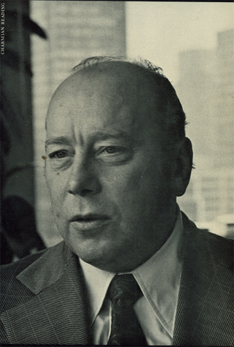

Alexander Dolgun

Перевод
В 1948 году Александр Долган, гражданин США, работающий в качестве младшего сотрудника в американском посольстве в Москве, был арестован по статье о социально-опасном элементе. До отправки в лагерь Степлага в Джезказгане Долган находился под стражей в московских тюрьмах Лефортово и Лубянка. В 1956 году был освобожден из Гулага. Однако покинуть страну сумел в 1972 году благодаря беспрестанным попыткам своей сестры, сотруднице организации Объединенных Нации.
Арест
Александр Долган был арестован в 1948 году в Москве, когда он шел пообедать всего в двух кварталах от американского посольства. Долгана отправили в тюрьму на Лубянку. Там охранник попросил его раздеться. «Было ясно, что он не шутит. Я сел на стул и начал раздеваться. Когда я поднял голову, то увидел, как он разложил мой пиджак на столе и ножом распарывает швы…Он прощупал подкладку и отворот пиджака. Затем он распорол плечевые подкладки. После он взял мои ботинки и ножом прорезал подошву. Он вынул металлическую подкладку и поставил обувь на пол, подошва у ботинок отстала. Затем он взял мой галстук, шнурки от ботинок, ремень и постучал в дверь, чтобы открыли. «Можно одеться?»-поинтересовался я.”
Труд
Работа была слишком тяжелой, учитывая количество еды и отдыха, которые мы за это получали. Люди умирали каждый день, особенно старики. Уровень смертности заметно увеличивался с наступлением холодов. Нам выдавали рукавицы, стеганные куртки и брюки, но они были сильно поношенными и не защищали, особенно если температура начинала падать. Мои руки постоянно мерзли. Принимая во внимание высоты, отсутствие водных бассейнов и растительности, чтобы смягчить температуру, неудивительно, что сентябрь быстро переходил в зиму. Замерзшие пальцы не могли удерживать рукоятки, рычаги, брусья и ящики, поэтому нередки были несчастные случаи, в том числе и со смертельным исходом. Одного мужчину задавило, когда мы разгружали бревна из вагона, используя два бревна в качестве эстакады. Он оказался заваленным бревнами, когда двадцать или более бревен рассыпались одновременно, и он не успел отскочить.
СТРАДАНИЯ
Если ты выполнял норму, то выдавалась стандартная пайка, известная как 100 процентов, и этого хватало, чтобы поддержать жизнь. В случае невыполнения нормы, ты получал меньшую пайку. Со снижением пайки ты становился более уязвимым, менее способным выполнять прежнюю норму, следовательно пайка снова снижалась. В итоге, она достигала предельного минимального уровня. К этому моменту заключенный, не получающий дополнительного питания, мог буквально умереть голодной смертью. Еда не хватало, если ты только не мошенничал. В любом случае в ней было мало полезных веществ. Из-за недостатка витаминов растространились цинга и паллегра, нередко приводившие к смертельному исходу.
ПРОПАГАНДА
Если ты выполнял норму, то выдавалась стандартная пайка, известная как 100 процентов, и этого хватало, чтобы поддержать жизнь. В случае невыполнения нормы, ты получал меньшую пайку. Со снижением пайки ты становился более уязвимым, менее способным выполнять прежнюю норму, следовательно пайка снова снижалась. В итоге, она достигала предельного минимального уровня. К этому моменту заключенный, не получающий дополнительного питания, мог буквально умереть голодной смертью. Еда не хватало, если ты только не мошенничал. В любом случае в ней было мало полезных веществ. Из-за недостатка витаминов растространились цинга и паллегра, нередко приводившие к смертельному исходу.
Конфликт
«Камера, в которой находились я и еще пятнадцать человек, имела выход на площадку. То, что я впервые увидел, напоминало бедлам. В камере было шумно. Позднее я сосчитал и обнаружил, что в камере шириной в шесть футов и длиной сорок футов помещалось сто двадцать девять человек. По бокам и в конце камеры размещались двухуровневые койки, представляющие из себя просто твердые деревянные доски. В самом конце камеры находилось большое окно, с решетками наружу, которое открывалось в теплую погоду. В отражении от окна было сложно раглядеть другой конец камеры , но я точно знал, что там были люди, которые стояли, сидели, или лежали как на спальных койках, так и под ними.
Солидарность
За общением между заключенными постоянно следили. Те изобрели своего рода азбуку Морзе на основе русских букв. Заключенный в соседней камере постоянно постукивал по стене, и Долгану потребовалось время , чтобы расшифровать сообщение. «Пять рядов по шесть букв. Конечно! Вот, что он посылал мне каждую ночь! Проклятый алфавит! Как я мог не понять это? В моей груди проснулось чувство особой привязанности к человеку , который в течении трех месяцев подряд спрашивал обо мне, а я ничего не мог ответить.
Охрана
Когда мы находились на рабочем месте, охранники постоянно проходили мимо мастерской, сварочного цеха или где бы мы ни работали. Они смотрели на нас, словно мы были экспонатами в зоопарке. Им часто приходилось сменять друг друга на посту, переходить из одного лагеря в другой, чтобы предотратить возможность завязывания дружественных отношений с заключенными. Это могло отразиться на их моральном настрое, если охранники увидят в нас таких же, как они людей, и узнают, что мы отбывали наши наказания за небольшие проступки или вообще без причины.
Выживание
Для заключенных особую сложность представляло содержание в одиночной камере. Долган изобретал различные способы, чтобы не сойти с ума. «Почти каждый день я пересказывал сюжет фильма. Фильм «13 Rue Madeleine» был моим самым любимым. Это была история о Гестапо, военных диверсантах и высадке в оккупированной Франции. Я виртуально просмотрел этот фильм несколько раз. Пришел к выводу, что с каждым новым просмотром фильма всплывают новые детали. Спустя некоторое время я мог запросто написать сценарий к нему. Я начал читать себе лекции по мировой географии, воспроизводя в памяти знания по населению, индустрии, осадкам, растительному миру, рекам, городам, политическому устройству, и еще многим аспектам.
Судьба
Сестра Александра Долгана переехала в Соединенные Штаты и начала работать в Организации Объединенных Нации. Узнав о том, что брат был арестован, она попыталась ему помочь. Американские власти посоветовали не вмешиваться, чтобы не ухудшать ситуации. В 1956 году Долган был освобожден. Однако ему разрешили покинуть страну только в 1972 году. В 1965 году он женился. В 1972 году получил американский паспорт и вместе с женой и сыном уехал в Соединенные Штаты.
Item List
Prisoners
- Olga Adamova-Sliozberg
- Nina Pavlova Aminova
- Anna Andreeva
- George Bien
- Aleksandr Borin
- Edward Buca
- Boris Chetverikov
- Alexander Dolgun
- Nina Gagen-Torn
- Eugenia Ginzburg
- Gustav Herling
- Evfrosiniia Kersnovskaia
- Lev Kopelev
- Anna Larina
- Galina Ivanova Levinson
- Alfred Martinovich Mirek
- Margarete Buber Neumann
- John Noble
- Dimitri Panin
- Susanna Pechuro
- Evgeniia Michailovna Peunkova
- Lev Razgon
- Jacques Rossi
- Joseph Scholmer
- Thomas Sgovio
- Danylo Shumuk
- Michael Solomon
- Vladimir Tchernavin
- Alla Tumanova